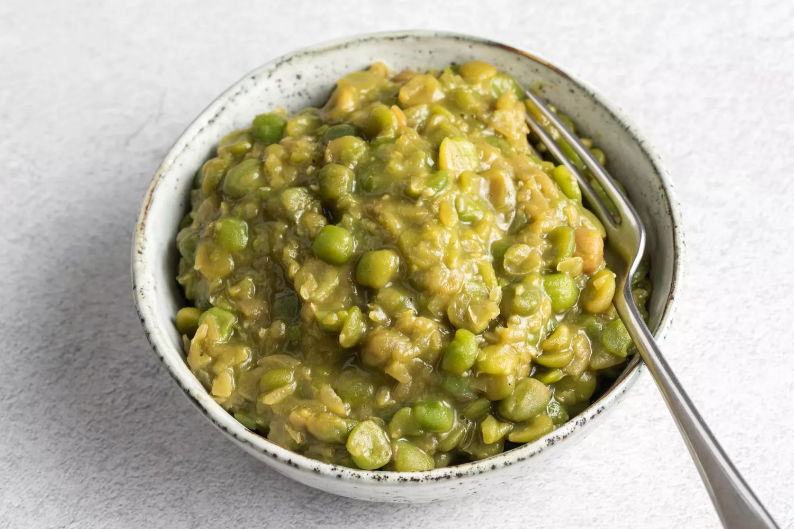

Mushy Peas

Description
What else can I say?
The mouthwatering look, the squishy texture, and the fragrant smell all make for a yummy dish.
Ingredients
- 8 ounces dried marrowfat peas
- 2 teaspoons baking soda
- 2 cups boiling water
- Salt, to taste
- Pepper, to taste
- 1 to 1 1/2 teaspoons sugar (optional)
- 2 to 4 tablespoons heavy cream or milk (optional)
- 1 to 2 tablespoons butter or to taste (optional)
Steps
- Gather the ingredients
- Place the peas in a large bowl or stockpot; they need plenty of room to expand. Add the baking soda and cover with 2 cups of boiling water. Stir until the baking soda dissolves.
- Let the peas soak for a minimum of 12 hours.
- Drain and rinse the peas well in a colander, then transfer them to a large pot.
- Cover the peas with cold water (about 2 cups) and bring them to a boil.
- Lower the heat and simmer the peas uncovered for approximately 30 minutes or until they soften and turn mushy.
- Season the peas with salt and pepper to taste. Add the optional sugar if you prefer them slightly sweeter, heavy cream or milk to give them a fluffier texture, or butter for flavor. You can also smash them with a fork for a smoother texture, or run them through the food processor if you prefer a puree.
- Serve the mushy peas hot with fish and chips or a tasty meat pie. Enjoy.